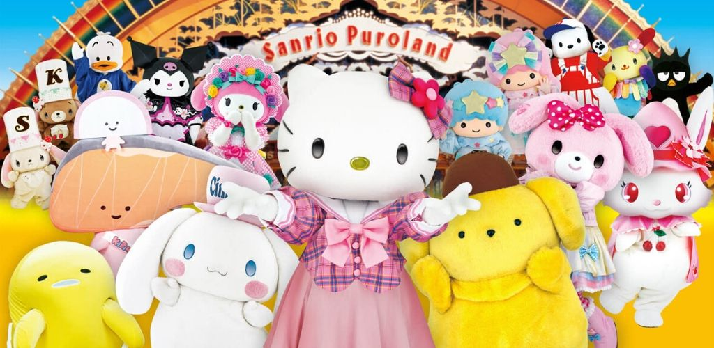

Si vous avez la chance de partir au Japon, vous entendrez forcément des Japonais utiliser le mot « kawaii » (à prononcer « ka-wa-iiiiii », en insistant bien sur le « iiiiii ») à tout bout de champ, surtout si vous vous retrouvez dans le quartier d’Harajuku, lieu emblématique de la pop culture japonaise. Et si jamais vous ne l’entendez pas, vous allez obligatoirement le voir. Adjectif japonais désignant quelque chose ou quelqu'un de mignon, le mot kawaii (可愛い, ou かわいい) est souvent utilisé au Japon. Cette culture de l'adorable se retrouve aussi bien au niveau du style vestimentaire de certaines jeunes filles, des affiches publicitaires, de la musique j-pop ou même dans la cuisine nippone ! La première signification qui nous vient à l’esprit quand on parle de kawaii c’est le terme « mignon ». En réalité, la connotation du mot kawaii n’a pas toujours été positive et sa définition actuelle ne peut se résumer à un seul mot. Son origine proviendrait du mot « kaohayushi » utilisé pendant la période Heian (794 – 1185) pour décrire « un visage rougis par la honte ou la culpabilité ». Au cours de l’ère Taisho (1912 – 1926), ce mot a évolué pour donner « kawayushi » qui signifie « embarrassé, pathétique, vulnérable » ou encore « adorable, mignon, petit». Ce mot à double sens a ensuite fini par donner le terme kawaii que nous connaissons, ainsi que le terme kawaisô qui signifie « pathétique ». Le terme kawaii est utilisé pour définir quelque chose ou quelqu’un de mignon, d’innocent et de pure. Derrière ce mot se cachent également des connotations de timidité, de vulnérabilité et de tendresse. Quand vous pensez kawaii, vous pouvez penser aux bébés avec leurs joues roses ou aux petites créatures duveteuses, comme les bébés chats ou les lapins nains. Généralement, cette notion de mignon se réfère à l’innocence de la jeunesse. Les personnages fictifs qualifiés de « kawaii » ont tous les mêmes particularités, à savoir une tête ronde, généralement disproportionnée par rapport au corps, de très grands yeux ronds, un tout petit nez et une toute petite bouche. Les couleurs restent généralement dans des tons pastels, des nuances de roses, de bleus… en bref, une grande panoplie de couleurs qui rappellent la petite enfance.
La naissance du style kawaii est complexe et pleine de mystères, il est difficile de dater avec précision son apparition et encore moins de l’expliquer d’une seule façon. Cependant, il est possible de faire un lien entre apparition du style kawaii et quelques actes de rébellion de la part des étudiant(e)s. A la fin des années 1960 et début années 1970, des étudiants universitaires japonais ont lancé un mouvement de protestation contre les traditions, les connaissances académiques et l’autorité étouffantes. Lors de cet acte de rébellion, bon nombre d’entre eux séchaient les cours pour lire des mangas pour enfants. Ce comportement immature est une contestation contre le stress, les contraintes sociales de la vie d’adulte et les exigences du travail en entreprise. On assiste également à une véritable révolution calligraphique. Les jeunes filles ont commencé à écrire horizontalement avec des caractères arrondis, des traits réguliers et ornés de petits dessins et symboles comme des cœurs, des étoiles et des expressions faciales mignonnes (qui donneront plus tard les fameux smileys que nous connaissons tous). Cette nouvelle façon d’écrire, bien loin de la traditionnelle calligraphie verticale aux traits de pinceaux rigoureusement irréguliers, connut un succès phénoménal dans toutes les écoles japonaises, au grand désespoir des professeurs car les copies devenaient illisibles. Ce style d’écriture, connu sous le nom de burikko-ji (« caractères puérils ») ou koneko-ji (« caractères de chatons »), fut même interdit dans certaines écoles. Lorsque l’industrie pris conscience de l’ampleur de ce phénomène, il ne fallut pas attendre plus longtemps pour les entreprises s’emparent de cette mode du mignon. Pour vendre leurs produits ou services, les publicitaires n’hésitent pas à utiliser le style d’écriture kawaii utilisé par les jeunes Japonais. Une des premières entreprises à surfer sur le kawaii est sans aucun doute l’entreprise Sanrio qui créa, en 1974, un personnage kawaii mondialement reconnu : Hello Kitty !